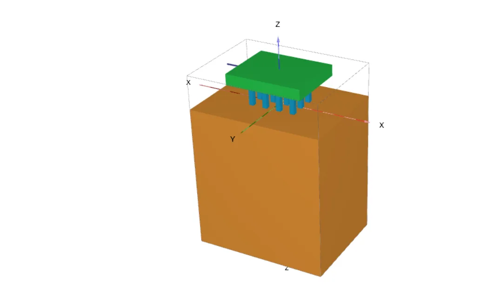
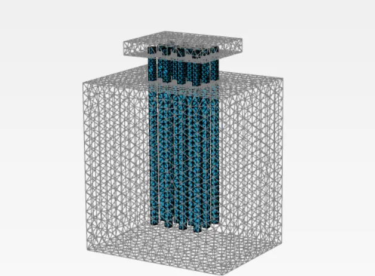
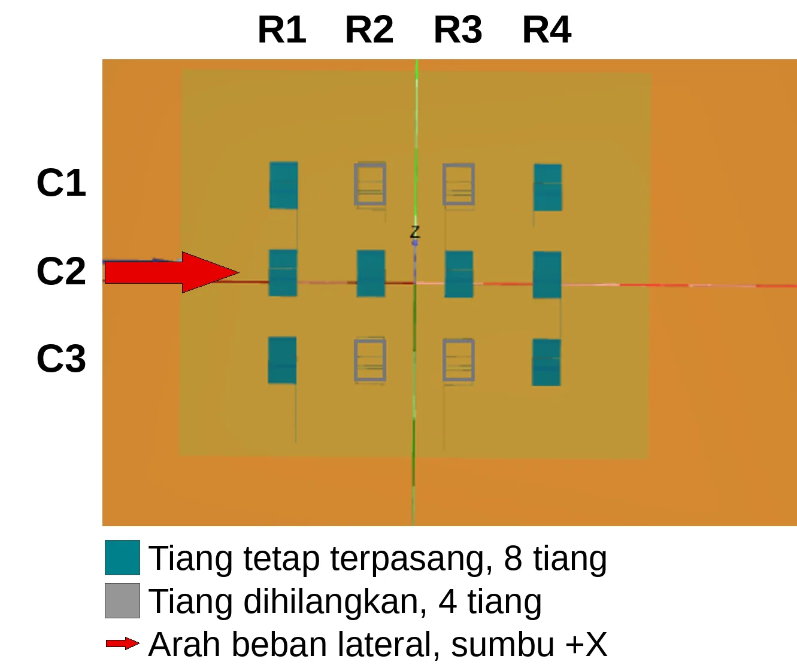
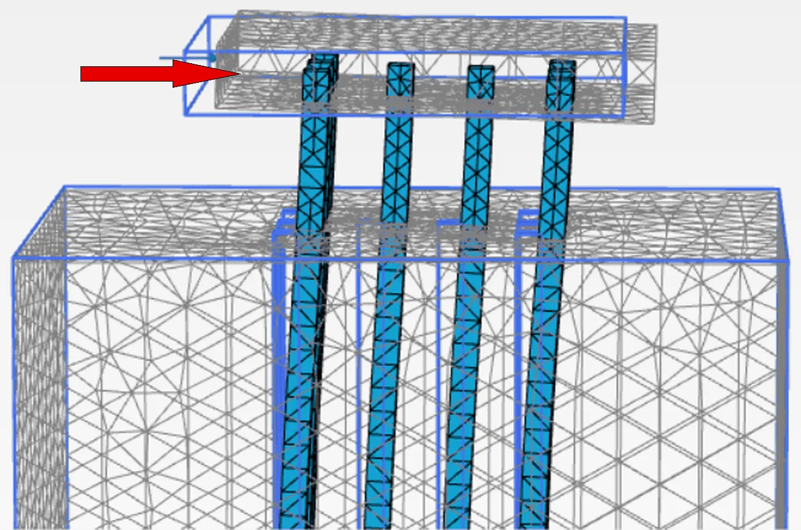
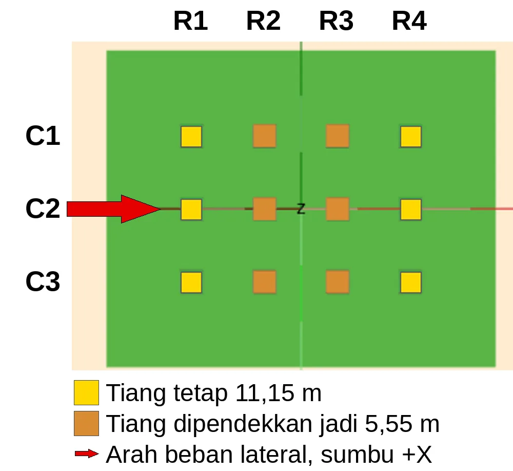
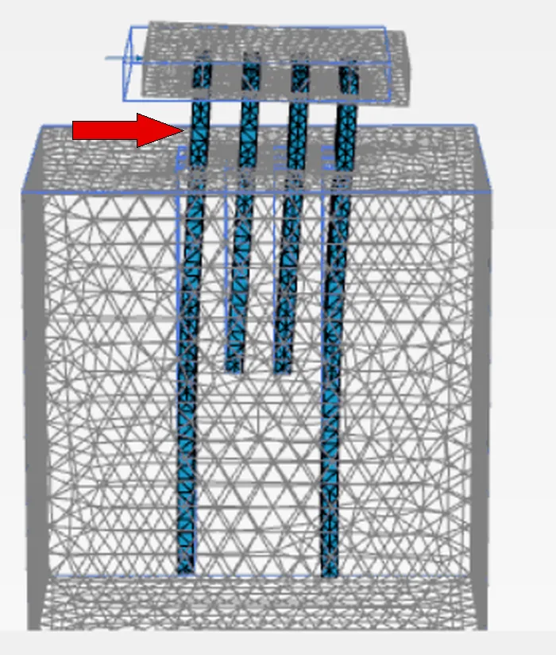

Back-analysis dan optimasi kelompok 12 tiang dengan PLAXIS 3D
Model elemen hingga 3D kelompok 12 tiang baja dikalibrasi terhadap uji beban lateral lapangan sampai selisihnya 0,82 %, lalu dipakai untuk membaca gaya tiap tiang dan mencari tiang mana yang bisa dihilangkan atau dipendekkan.
- Acara atau tempat
- Indonesian Geotechnical Challenge (IGC) 2026, HATTI, tahap penyisihan
- Tahun
- 2026
- Peran saya
- Anggota tim HIMATESI UNJA (3 orang).
- Hasil
- Peringkat 1 dari 5 finalis tahap pertama
- Perangkat lunak
- PLAXIS 3D, Microsoft Excel
- Jenis
- Lomba, Pemodelan, Perhitungan
Masalah
Studi kasus panitia: dua belas tiang baja kotak berongga (lebar 430 mm, tertanam 11,15 m) dipasang dengan cara ditekan (jacked-in) ke tanah pasir dan diberi beban lateral sampai 2.300 kN. Data yang diberikan: kurva uji pembebanan lateral, spesifikasi tiang dan pile cap, parameter tanah, dan hasil uji triaksial CD. Soal terdiri dari empat bagian: back-analysis, arah tarik dibanding dorong, optimasi jumlah tiang, dan optimasi panjang tiang.
1. Parameter tanah dari uji triaksial
Kurva triaksial CD (σ3′ = 100 kPa) memuncak pada q = 270,27 kPa di regangan 4,60 %. Modulus sekan pada setengah tegangan puncak memberi E50 = 28.541,53 kPa (dibulatkan 28.550 kPa); karena tegangan sel sama dengan pref, E50 = E50,ref. Lingkaran Mohr memberi φ′ = 35,08° (dipakai 35°), di antara φ kritis 32° dan φ puncak 37°, jadi lolos uji kewajaran.
| Parameter | Nilai | Satuan | Dasar |
|---|---|---|---|
| γ | 14,50 | kN/m³ | Data soal |
| e awal | 0,83 | - | Data soal |
| E50,ref | 28.550 | kN/m² | Kurva triaksial CD |
| Eoed,ref | 28.550 | kN/m² | = E50,ref |
| Eur,ref | 85.650 | kN/m² | 3 × E50,ref (Brinkgreve dkk., 2019) |
| m | 0,5 | - | Nilai baku pasir |
| φ′ | 35 | ° | Lingkaran Mohr |
| ψ | 5 | ° | φ′ − 30° (Bolton, 1986) |
| K0 | 0,426 | - | 1 − sin φ′ (Jaky, 1944) |
2. Model PLAXIS 3D
Tanah dimodelkan dengan Hardening Soil, tiang sebagai elemen plate berongga, dan pile cap 6,88 × 5,59 × 1,00 m dengan kepala tiang jepit. Perhitungan dibagi tiga tahap: kondisi awal (prosedur K0), pemasangan tiang, lalu beban lateral bertahap.




3. Kalibrasi terhadap uji lapangan
Model awal terlalu kaku: perpindahan pada 2.300 kN hanya 51,41 mm, padahal lapangan 82,00 mm. Kalibrasi dibatasi satu variabel, yaitu faktor pengali kekakuan f, supaya hasilnya bisa dijelaskan. Pada iterasi ketiga (f = 0,485, E50,ref = 13.850 kPa) RMSE turun dari 16,85 mm ke 0,61 mm.
- Uji lapangan
- Iterasi 1
- Iterasi 2
- Iterasi 3 (final)
Lihat data
| H (kN) | u lapangan (mm) | Iterasi 1 | Iterasi 2 | Iterasi 3 |
|---|---|---|---|---|
| 230 | 4,18 | 3,05 | 4,35 | 4,99 |
| 460 | 9,65 | 6,65 | 9,36 | 10,70 |
| 690 | 16,20 | 10,72 | 14,95 | 17,05 |
| 920 | 23,28 | 15,18 | 21,09 | 24,03 |
| 1.150 | 31,20 | 20,03 | 27,75 | 31,60 |
| 1.380 | 39,69 | 25,24 | 34,97 | 39,83 |
| 1.610 | 48,64 | 30,87 | 42,83 | 48,83 |
| 1.840 | 58,69 | 37,01 | 51,51 | 58,79 |
| 2.070 | 69,84 | 43,82 | 61,26 | 70,02 |
| 2.300 | 82 | 51,41 | 72,22 | 82,68 |
| Iterasi | f | E50,ref (kN/m²) | u pada 2.300 kN (mm) | Selisih | RMSE (mm) |
|---|---|---|---|---|---|
| 1 (tanpa kalibrasi) | 1,000 | 28.550 | 51,41 | −37,30 % | 16,85 |
| 2 | 0,590 | 16.850 | 72,22 | −11,93 % | 5,43 |
| 3 (final) | 0,485 | 13.850 | 82,68 | +0,82 % | 0,61 |
4. Gaya tiap tiang dan efek naungan
Pembacaan gaya diuji dengan kesetimbangan: jumlah gaya geser dua belas tiang 2.300,23 kN (selisih 0,010 % dari beban luar). Baris terdepan searah gerak memikul paling besar karena menekan tanah yang belum terganggu (efek naungan, Rollins dkk., 2005), dan tiang di kolom tepi memikul 7–13 % lebih besar daripada kolom tengah.
Arah tarik dibanding dorong: selisih perpindahan paling besar 0,041 %, jadi untuk susunan simetris ini arah beban tidak berpengaruh.
Lihat data
| Q rata-rata | |
|---|---|
| R4 (terdepan) | 283,87 |
| R3 | 186,07 |
| R2 | 152,29 |
| R1 (paling belakang) | 144,51 |
Kopel aksial tiang depan (tekan) dan belakang (tarik) menahan momen guling sebesar 7.941 kNm.
Lihat data
| N | |
|---|---|
| R1C1 | 596,49 |
| R1C2 | 503,88 |
| R1C3 | 585,50 |
| R2C1 | 260,66 |
| R2C2 | 145,80 |
| R2C3 | 259,95 |
| R3C1 | -137,59 |
| R3C2 | -71,88 |
| R3C3 | -133,93 |
| R4C1 | -712,54 |
| R4C2 | -641,67 |
| R4C3 | -727,40 |
Warna makin pekat = gaya geser makin besar. Beban dari kiri; R4 baris terdepan. Arahkan kursor ke tiang untuk melihat angkanya.
5. Optimasi jumlah tiang: hilangkan 4 dari 12
Enam kombinasi diuji. K-6 memberi perpindahan terkecil, tetapi tidak simetris terhadap pembalikan arah beban, jadi yang dipilih K-2 (tepi luar dua baris tengah): perpindahan naik 19,1 % dengan empat tiang lebih sedikit. Kesimpulan penting: tiang dengan gaya geser terkecil belum tentu yang paling aman dibuang, karena kopel aksial penahan momen guling ikut menentukan.
Lihat data
| u | |
|---|---|
| Kontrol | 82,68 |
| K-1 | 157,08 |
| K-2 | 98,44 |
| K-3 | 109,16 |
| K-4 (tidak simetris) | 144,46 |
| K-5 (tidak simetris) | 137,19 |
| K-6 (tidak simetris) | 98,05 |
Lingkaran putus = tiang dihilangkan. Bingkai tebal = kombinasi terpilih.




6. Optimasi panjang tiang: pendekkan 6 dari 12
Delapan kombinasi memendekkan enam tiang dari 11,15 m menjadi 5,55 m. P-7 (dua baris tengah dipendekkan) memberi kenaikan perpindahan terkecil, 20,3 %, dan lolos kedua syarat kesimetrian. Hasilnya sejalan dengan Part 3: baris tengah paling sedikit menyumbang kekakuan.
Lihat data
| u | |
|---|---|
| Kontrol | 82,68 |
| P-1 (tidak simetris) | 128,82 |
| P-2 (tidak simetris) | 186,79 |
| P-3 (tidak simetris) | 112,18 |
| P-4 (tidak simetris) | 126,64 |
| P-5 (tidak simetris) | 138,41 |
| P-6 (tidak simetris) | 120,81 |
| P-7 | 99,44 |
| P-8 | 109,82 |
Lingkaran berwarna = tiang dipendekkan menjadi 5,55 m. Bingkai tebal = kombinasi terpilih.




7. Yang dipelajari
- Angka keluaran program diperiksa dengan kesetimbangan gaya sebelum dipakai.
- Kalibrasi dengan satu variabel bebas memberi hasil yang bisa dijelaskan; terlalu banyak variabel membuat kecocokan sulit dipertanggungjawabkan.
- Selisih model awal dengan lapangan sebagian dijelaskan oleh gangguan tanah saat pemasangan tiang.
- Engineering judgement: memilih tiang yang dibuang tidak cukup dari peringkat gaya geser saja.
Gambar dan angka dari laporan tim untuk tahap penyisihan. Menurut TOR IGC 2026, hak cipta karya peserta milik panitia; laporan lengkap tersedia atas permintaan.